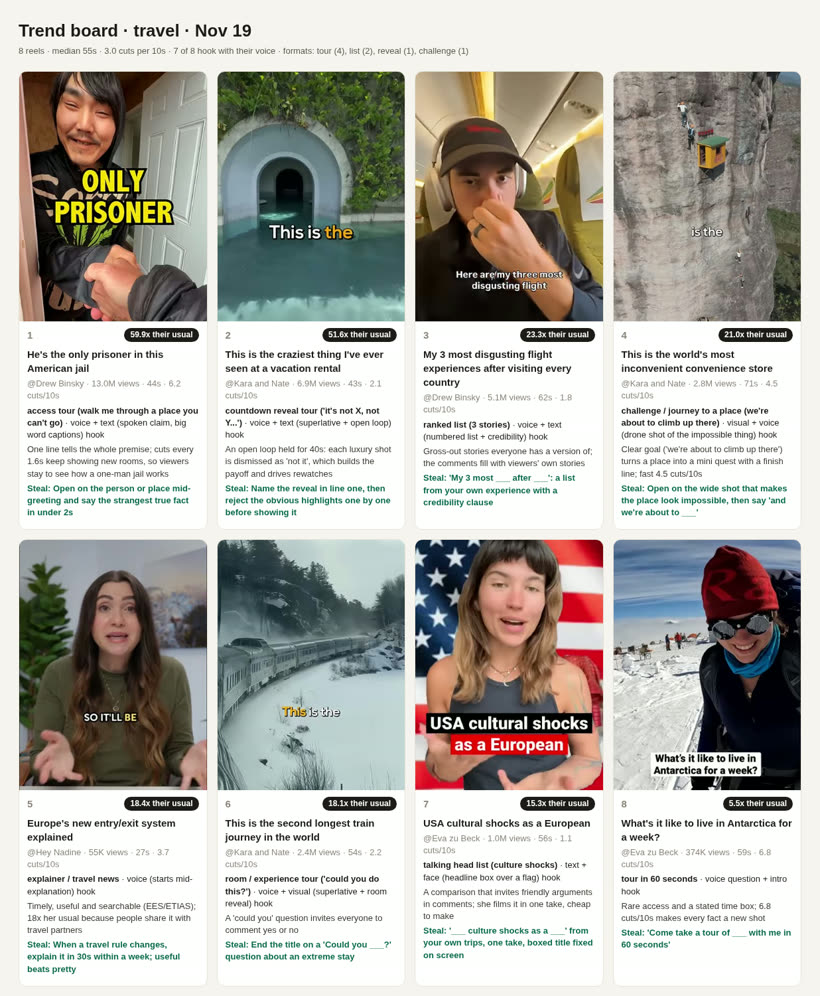

what's working in travel reels this week? i want ideas for madeira
Checked 6 accounts you look up to and 8 reels beating their usual views. Your board:
Trend board · travel · Nov 19board.png · Open preview ↗

What's working: tours and reveals with a voice hook (7 of 8), median 55 s, 3 cuts per 10 s.
Worth copying for you: the "it's not X, it's not Y" reveal (Kara and Nate, 52x their usual).
10 hooks for MadeiraPlan my next reelWhy did #3 work?
plan one with hook 2
Plan · "The best thing in Madeira is up these stairs"plan.md · 32 s · reveal tour
0–2sHook: walking up the stairs. "The best thing in Madeira isn't what you think."
2–14s"It's not Cabo Girão… not the lava pools… not the sunrise" · 4 clips from Dropbox/Madeira
14–26s"It's this." Reveal held 5 s, two details, the how-to
26–32s"Save this for your trip." · 2 shots missing: film or use a still
Edit it from my footageChange the hookShorter
Nothing is posted. The finished reel + caption come back here; posting needs a yes for that exact post.